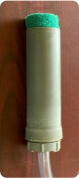
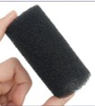
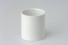
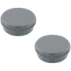
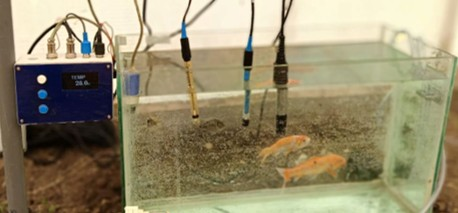
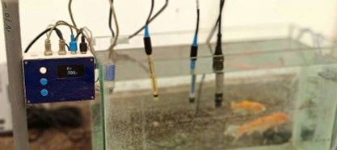
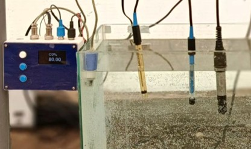
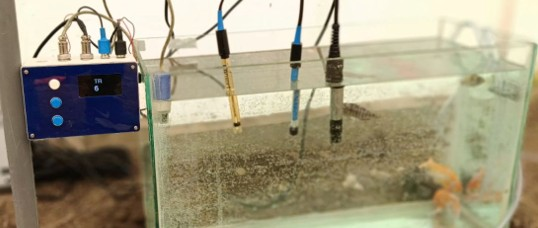

Filtre mécanique
Retient les déchets solides avant que l'eau n'atteigne le reste du circuit.

Matériel utilisé

Éponge
Tube PVC
Bouchon adaptéValeurs relevées sur le prototype, dans la serre expérimentale du laboratoire LINS.
Chaque mesure est comparée à un instrument étalon pour garantir une bonne calibration
Comparé au pH-mètre étalonIdéal : 6,5 – 7,0 Comparée au thermomètre étalonPlantes 18–26 °C · tilapia 24–30 °C
Comparée au thermomètre étalonPlantes 18–26 °C · tilapia 24–30 °C

Comparée au conductimètre étalonIdéal : 300 – 1200 µS/cm
Courbe d'étalonnage intégrée · valeur stableIdéal : > 5 mg/L
Courbe d'étalonnage intégrée · suivi de la clartéIdéal : < 5 NTUEssais menés avec des tomates et des poissons d'ornement (tilapia et laitue non disponibles à ce moment) : l'objectif était de valider la chaîne de mesure.